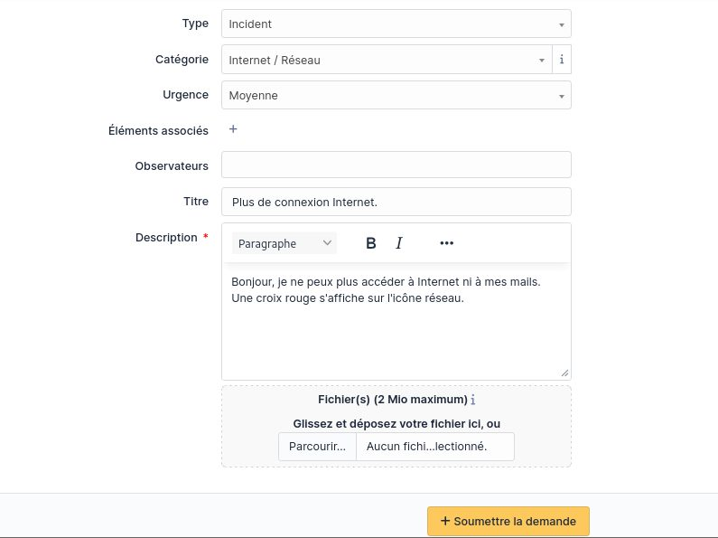
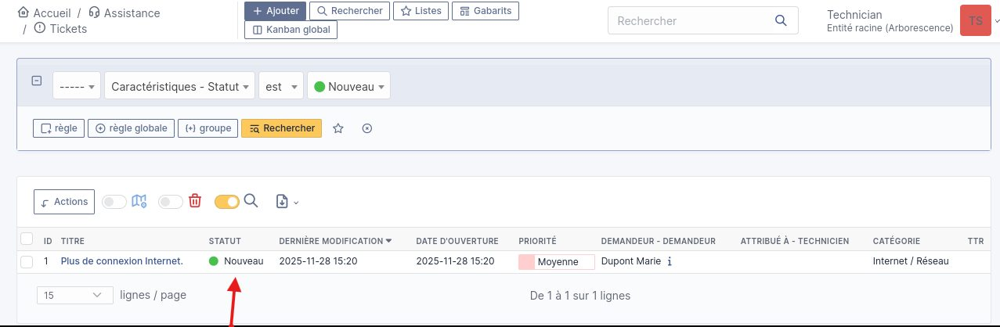
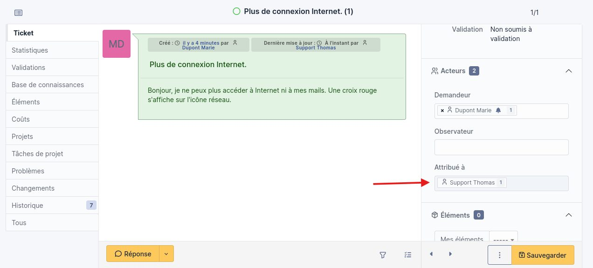
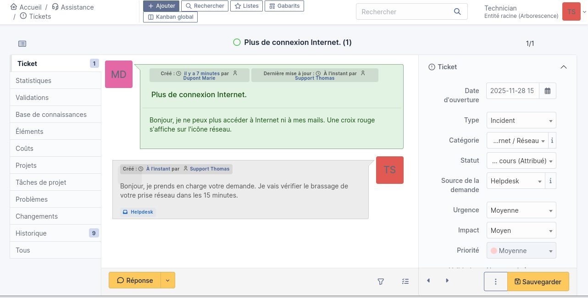
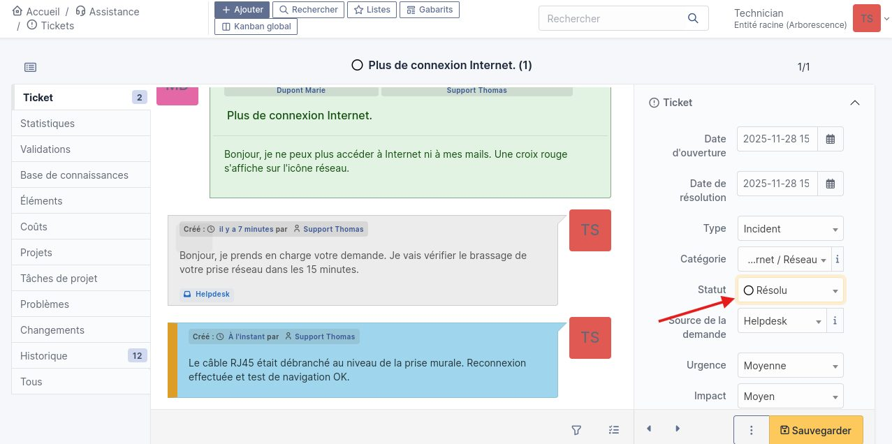
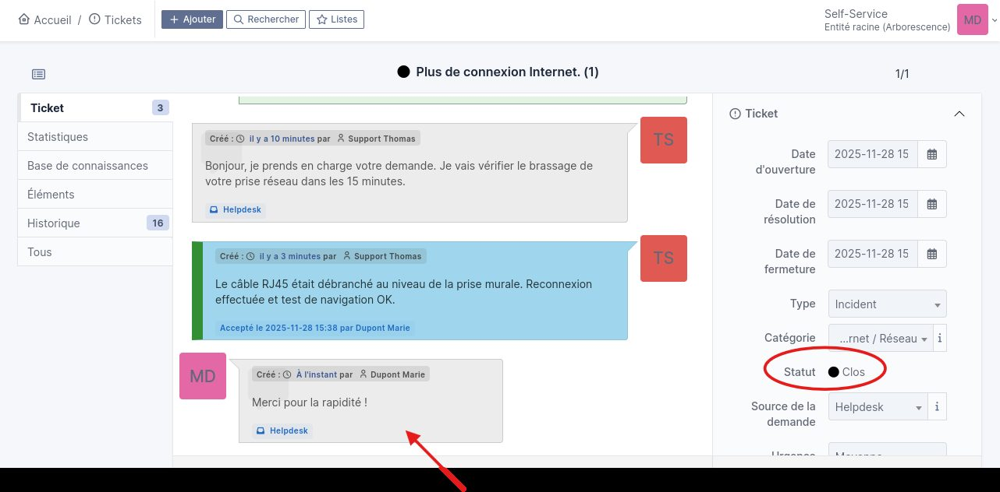
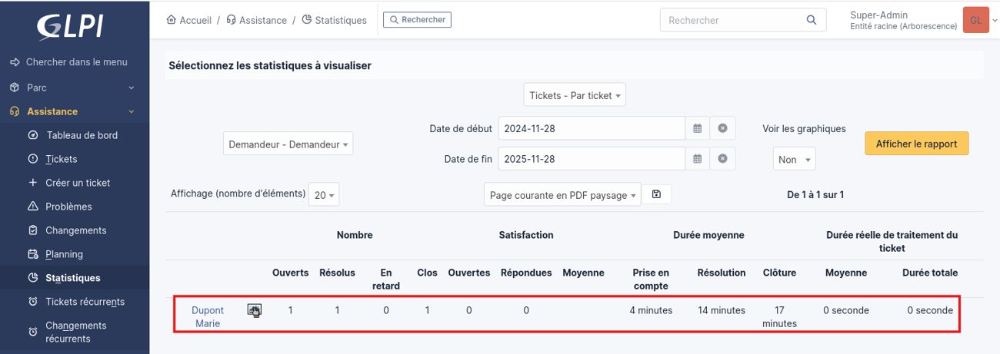

Cycle de vie d'un ticket
Suivre un incident de la déclaration à la clôture, du point de vue de l'utilisateur et du technicien.
Scénario
Un utilisateur n'a plus d'accès Internet. Il ouvre un ticket, le technicien le prend en charge, diagnostique un câble débranché et le résout, puis l'utilisateur valide la réparation.
1. Déclaration (utilisateur)
Sur l'interface simplifiée : type Incident, catégorie Internet / Réseau, urgence Moyenne, titre et description du problème.
2. Prise en charge (technicien)
Le ticket apparaît dans Assistance > Tickets avec le statut Nouveau. Le technicien se l'assigne : le statut passe automatiquement à « En cours (attribué) ».
3. Communication
Un suivi informe l'utilisateur que sa demande est prise en charge.
4. Résolution
Une solution est enregistrée : câble RJ45 reconnecté et test de navigation validé. Le statut passe à Résolu.
5. Validation et clôture
L'utilisateur approuve la solution et laisse un commentaire, et le ticket passe à Clos.
6. Statistiques
Dans Assistance > Statistiques, le rapport par ticket affiche le nombre de tickets ouverts, résolus et clos ainsi que le temps moyen de résolution.
Captures







Savoir-faire mobilisés
- ITSM
- Gestion des incidents
- ITIL 4
- Support utilisateur